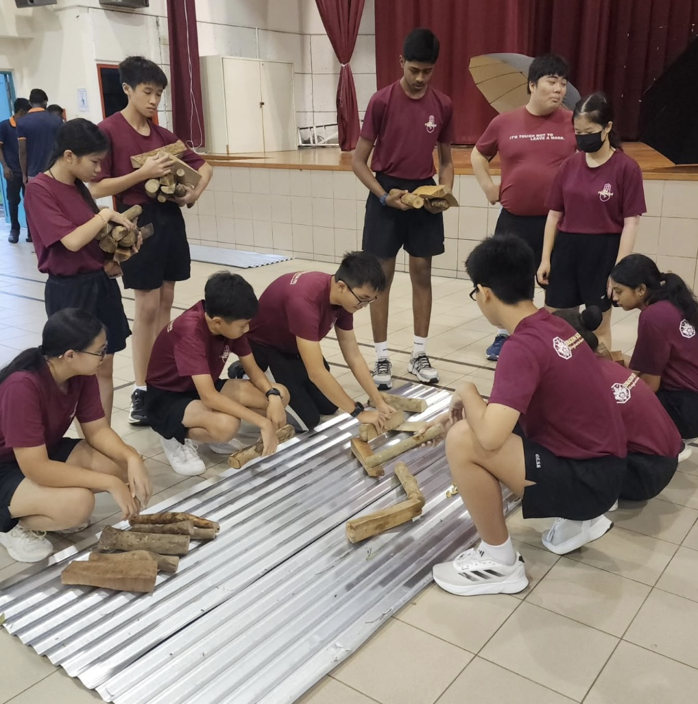
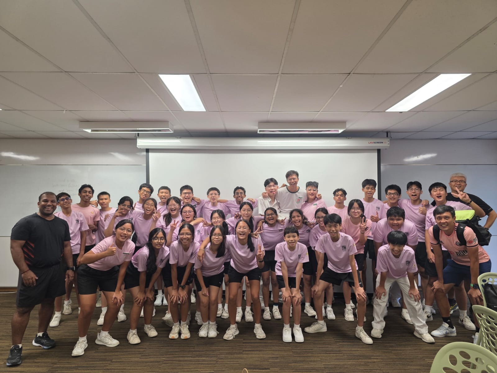

Leadership Roles

Dragon Scouts Group — Quartermaster & Patrol Leader
As Quartermaster of the Dragon Scouts Group, I made sure our tools(especially sharp ones) and other equipment were accounted for, and were at the right place at the right time, especially during big events like Cub Scouts Day and our annual Campfire. As a Patrol Leader, I took care and led my patrol during CCA.

GESS Sports Leaders member
As a GESS Sports Leader, I played a role in the planning and execution of Sports Events in GESS like Sports Fiesta and our annual Cross Country Run.